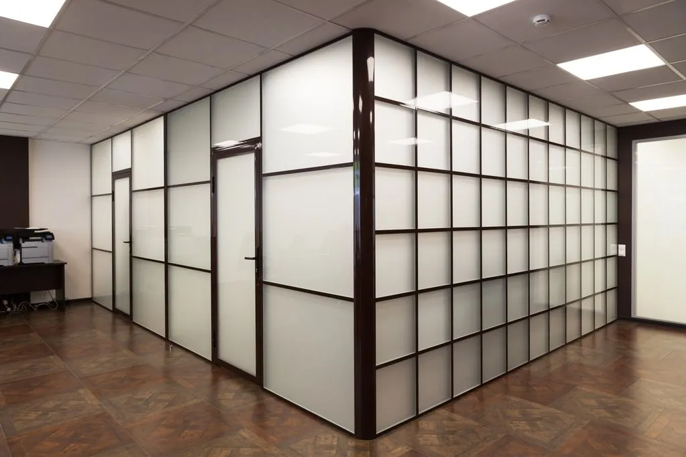

Перегородки из стекла для офиса

Перегородки из стекла для офиса – это современное и функциональное решение для создания открытого, но структурированного рабочего пространства. Компания ДизайнСтекло в Тольятти предлагает изготовление перегородок для офисов по индивидуальным проектам.
Основное содержание
Мы предлагаем перегородки из прочного закалённого стекла, которые могут быть как прозрачными, так и с матовым покрытием для обеспечения приватности. Также возможна установка тонированных или зеркальных перегородок, которые создадут современный и стильный вид вашего офиса.
Использование стеклянных перегородок в офисах позволяет зонировать пространство без создания громоздких стен, сохраняя свет и ощущение простора.
Преимущества стеклянных перегородок для офиса:
- Прозрачность — сохранение естественного света и визуального пространства.
- Звукоизоляция — перегородки обеспечивают достаточный уровень звукоизоляции для рабочих зон.
- Мобильность — возможность быстрой установки и изменения планировки.
- Стиль — современное и эстетичное решение для офисных интерьеров.
Области применения:
- Офисы: создание рабочих зон, переговорных комнат, зон отдыха.
- Коммерческие помещения: разделение пространства в магазинах, ресторанах.
- Конференц-залы: выделение зон для встреч и презентаций.
Вывод
Компания ДизайнСтекло предлагает высококачественные перегородки из стекла для офиса, которые позволят создать стильное и функциональное пространство.